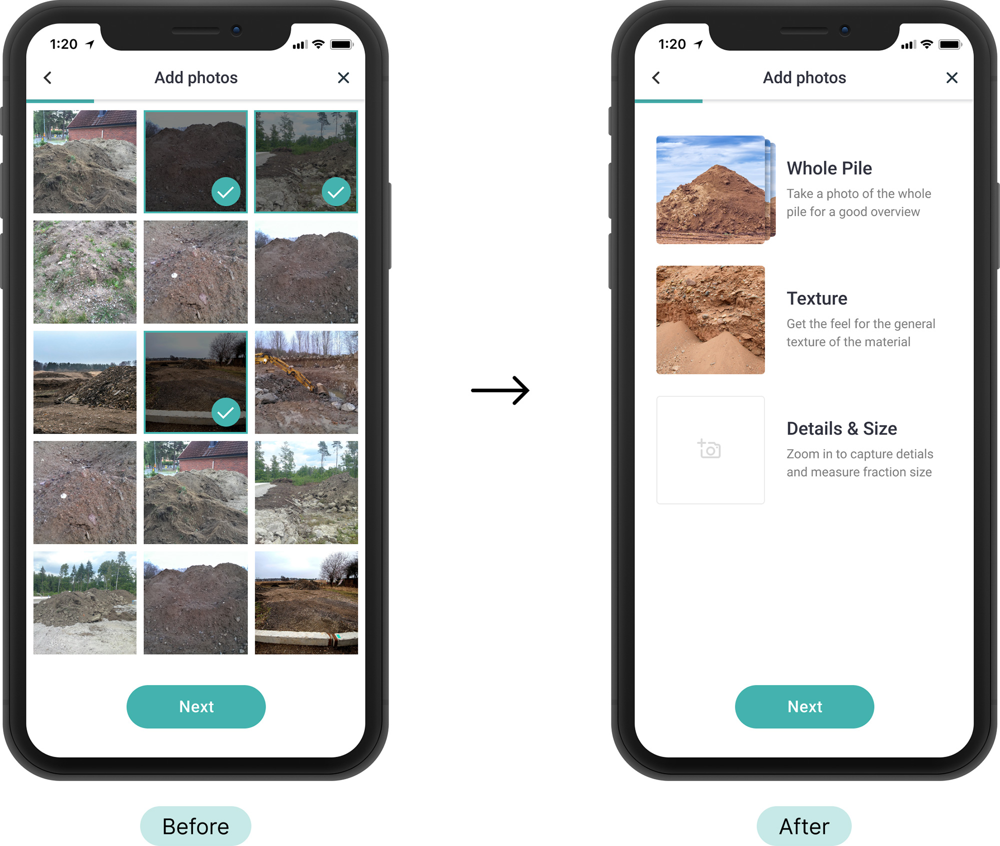

Challenge
How might we create tools to enhance user communication and bring more deals to the app?
Loop Rocks is a marketplace app for smarter stone, soil and filler material management. The app helps construction companies reduce costs and environmental impact by reusing materials instead of buying new ones. When I joined the project, Loop Rocks had already launched an MVP app and had an audience of around 10 000 users. My tasks were to identify existing issues and redesign the app.
From the analytics we knew that even though users were creating plenty of ads, there were not enough deals happening inside the app. Which in turn lead to missed opportunities to help users and direct revenue loss.
User problem
Inadequate information about materials inside the app, resulted in users missing better deals, higher transportation costs and left users more vulnerable to various scams.Business problem
With the deals happening outside the app, business was losing revenue and had fewer opportunities to assist users.
Research
Looking for patterns emerging from user interviews
To understand the causes of the issue and find new product opportunities we conducted series of user interviews and usability tests in the existing app.
One of the difficulties was products broad target audience. The team has been targeting owners of the small construction companies, construction site managers at medium-large sized companies and even private users. For this research phase we decided to focus on construction site managers at medium-large sized companies.
After visiting multiple construction sites and talking to site managers and small business owners we started noticing the common themes. It became clear that among other issues, one of the biggest obstacles for making deals inside the app was the lack of trust. Users receiving materials needed to check them in person and could not commit to deals based just on the information inside the app.
- üöß Construction companies needed a detailed description of materials to comply with strict industry standards
- ü§¨ Private users didn't know which materials they can use for their projects. In many cases users ended up getting frustrated after receiving wrong materials
- üîç Many deals happened outside the app because users needed to drive to the pickup location and check material quality in person
- üë¨ After creating an ad in the app many users still ended up reaching out and dealing with their old contacts
Mapping of user pain-points and business oportunities to a typical project timeline
Sketching, prototyping & testing
Guide for adding images
After sketching out and testing some initial ideas we focused on the one that helped users examine the details of the material and simplify decision making. We included a guide for adding images as a part of the ad creation process, specifying which zoom levels were needed and explaining which details were impotant to focus on.

Before: Users could select photos from the library, but without instructions it was unclear which images were needed
After: Uploading images into specific categories provided a simple guide and made it easier to upload meaningful photos
Improved filtering
Interviews revealed that in many cases there was no need for an exact material or amount match. Sometimes the material doesn’t need to be pure or the client would be happy to mix materials from a few sources. We redesigned the filtering UI and updated the filtering algorithm to allow for more matches.
- Clearer hierarchy of elements
- Emphasis on interactive elements
- Appropriate input types
- Flexible matching for material type
Results
What did we learn?
It can be difficult to introduce new digital tools to a conservative industry, but providing enough flexibility and guidance helps lower these barriers for users. In our case the detailed guide for image uploading helped users create more ads and make more deals inside the app.
Copy is important
By talking to construction site managers and learning their vocabulary and specific terminology, we made the interface more understandable by speaking the users language.New product opportunities
The interviews were focused around the role of the app in customers work processes and along the way we learned a lot about site managers day-to-day work and needs. These findings gave the design team plenty of insights for new product opportunities.